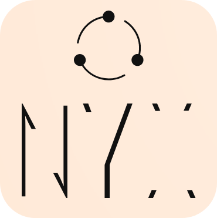

Powerful Flutter media converter powered by FFmpeg.
Nyx Converter is a Flutter package that provides a simple API for converting audio and video files using FFmpeg.
No manual FFmpeg command writing is required. Nyx Converter handles command generation, validation, progress tracking and conversion management.
dependencies: nyx_converter: latest
import 'package:nyx_converter/nyx_converter.dart';
await NyxConverter.convertTo(
inputPath,
outputDirectory,
container: NyxContainer.mp4,
videoCodec: NyxVideoCodec.h264,
audioCodec: NyxAudioCodec.aac,
execution: (
status,
{
progress,
fps,
speed,
errorMessage,
}
) {
print(status);
print(progress);
},
);
Learn more about: